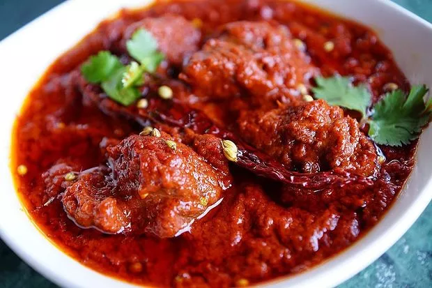

You cannot talk about Rajasthani dishes without mentioning the crowd favourite, Laal Maas . This spicy dish gets its colour from the fiery red chillies. Best served with bajra rotis , this dish with plain rice won't disappoint you.
Ingedients
- Mutton cut into 1 inch pieces 750 grams
- Kashmiri red chillies soaked 6-8
- Yogurt ½ cup
- Cumin powder 2 teaspoons
- Coriander powder 2 teaspoons
- Turmeric powder ¼ teaspoon
- Ginger-garlic paste 2 tablespoons
- Ghee 4 tablespoons
- Black cardamoms 2
- Green cardamoms 3-4
- Cinnamon 1 inch stick
- Cloves 3-4
- Bay leaf 1
- Onions finely chopped 4 medium
- Garam masala powder ½ teaspoon
- coriander sprig for garnishing
- Charcoal 2-3 pieces
Steps
- Grind the soaked chillies to a fine paste in a blender.
- In a large mixing bowl, combine the mutton, yogurt, cumin powder, coriander powder, turmeric powder, one tablespoon ginger garlic paste and the red chilli paste. Mix well and set aside to marinate in the refrigerator for an hour.
- Heat ghee in a nonstick pressure cooker, to that add black cardamom, green cardamoms, cinnamon, cloves and bay leaf and sauté till its fragrant.
- Add the onions and sauté till they turn light brown in colour. Then add the remaining ginger garlic paste and sauté for a minute.
- Add the marinated mutton to the onions and sauté on high heat for two to three minutes.
- Add salt and sufficient water to cover all the mutton pieces. Cover with a lid and let it cook under pressure for seven to eight whistles.
- Once done, remove from heat and wait till the pressure is released.
- Meanwhile light the piece of charcoal, place it in a small metal bowl and place the bowl in the centre of pressure cooker.
- Add two to three cloves to the coal, pour some ghee and quickly cover with a lid and set aside for two to three minutes.
- Put the curry back on heat, add garam masala and give a quick stir before removing from heat.
- Transfer to a serving bowl, garnish with coriander sprigs and a lemon wedge. Serve hot.